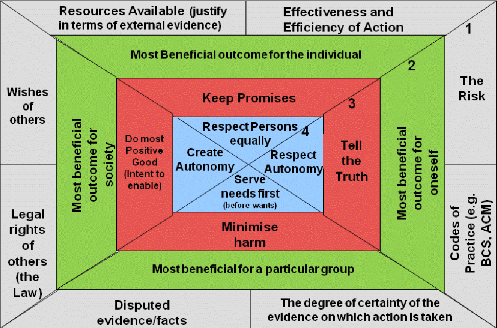

Principles of Ethical Practice in Public Health
1. Causes of disease to prevent adverse health outcomes:
- Public health should address principally the fundamental causes of ill health and requirements for health, aiming to prevent adverse health outcomes.
- It should not only give priority to prevention of ill health but also focus on the most fundamental levels.
- The principle acknowledges that public health will concern itself with some immediate causes and some curative roles.
2. Rights of individuals:
- Public health should achieve community health in a way that respects the rights of individuals in the community.
3. Community inputs to policy and programs:
- Public health policies, programs and priorities should be developed and evaluated through processes that ensure opportunity for input from community members.
4. Seek information to implement policies and programs:
- Public health should seek the information needed to implement effective policies and programs that protect and promote health.
5. Empowerment of marginalized communities, resources and accessibility of health:
- Public health should advocate and work for the empowerment of marginalized and socially excluded community members, aiming to ensure that the basic resources and conditions necessary for health are accessible to all.
6. Public health institutions and community consent to policy/program decisions:
- Public health institutions should provide communities with the information they have that is needed for decisions on policies and programs.
- Public health programs should also obtain the community's consent for their implementation.
7. Public mandate:
- Public health institutions should act in a timely manner on the information they have within the resources and the mandate given to them.
8. Program implementation and physical, social environment:
- Public health programs and policies should be implemented in a manner that enhances the physical and social environment.
9. Public health policy/programs approaches and values, beliefs and culture:
- Public health programs and policies should incorporate a variety of approaches that anticipate and respect diverse values, beliefs, and cultures in the community.
10. Protection of information confidentiality:
- Public health institutions and professionals should protect the confidentiality of information that can bring harm to an individual or community if made public.
- Exceptions must be justified on the basis of the high likelihood of significant harm to the individual or others.
11. Public health institutions and competency of employees:
- Public health institutions should ensure the professional competency of their employees.
12. Public health institutions and employees for public trust:
- Public health institutions and their employees should engage in collaborations, networking and affiliations in ways that build the public trust and the institutions' effectiveness.

Seedhouse's Ethical Grid — a framework for ethical decision making in healthcare settings (Seedhouse, 1998)
Source: Seedhouse's Ethical Grid (Seedhouse, 1998b)